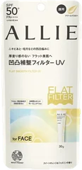
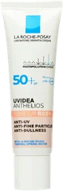
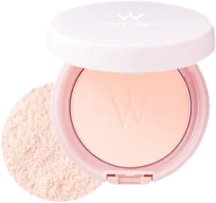
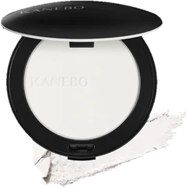
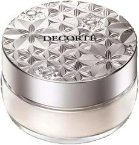

下地2位

ALLIE
クロノビューティ フラットスムースフィルターUV
30g
¥2,178税込・出典掲載価格
@cosmeクチコミの要約
- 鼻まわりの凹凸が気になるなら、黄色いクリームの日焼け止め下地で、朝の日焼け止めと下地がこれ1本に。
- 小鼻だけの部分使いもできる
気になる声深い毛穴より、細かい凹凸や赤みをならしたい人がまず試したい1本
販売価格・容量・送料はリンク先でご確認ください
THE COSME EDIT / 2026.09.14
動画で紹介した5品です。順位は、それぞれが受賞した@cosmeベストコスメアワードの回と部門での順位で、5品の中での順位ではありません。
05 ITEMS 動画で紹介した商品
2026上半期新作・2025年間・2025上半期新作の化粧下地とパウダーの受賞品から、いま販売中で楽天で扱いがあるものを選びました。2026上半期新作パウダーの上位2品（ミラノコレクション）は数量限定品のため外しています。fwee スパグロウUVトーンアップベース（2026上半期新作 化粧下地 第3位）は本数の都合で外しました。
価格は出典掲載時のものです。楽天の現在価格とは異なる場合があります。

ALLIE
30g
¥2,178税込・出典掲載価格
@cosmeクチコミの要約
気になる声深い毛穴より、細かい凹凸や赤みをならしたい人がまず試したい1本
販売価格・容量・送料はリンク先でご確認ください

ラ ロッシュ ポゼ
30mL
¥4,070税込・出典掲載価格
@cosmeクチコミの要約
気になる声スキンケアがなじんでから塗れば、ノーファンデの日の頼れる1本に
販売価格・容量・送料はリンク先でご確認ください

Wonjungyo
11g
¥2,200税込・出典掲載価格
@cosmeクチコミの要約
気になる声頬は薄くのせればポーチの常備品に
販売価格・容量・送料はリンク先でご確認ください

KANEBO
8.5g
¥7,150税込・出典掲載価格
@cosmeクチコミの要約
気になる声乾燥しやすい日は保湿を先に仕込めば、ラメなしのサラッと肌に
販売価格・容量・送料はリンク先でご確認ください

コスメデコルテ
20g
¥6,270税込・出典掲載価格
@cosmeクチコミの要約
気になる声毛穴落ちが気になるなら色選びがカギ。自分の色をリンク先で
販売価格・容量・送料はリンク先でご確認ください
SOURCE & NOTES
集計期間：2026上半期新作／2025年間／2025上半期新作（2026年9月14日に確認）
価格と容量は@cosmeに載っている税込価格です。KANEBOはメーカー公式サイトの本体（8.5g）の価格です。